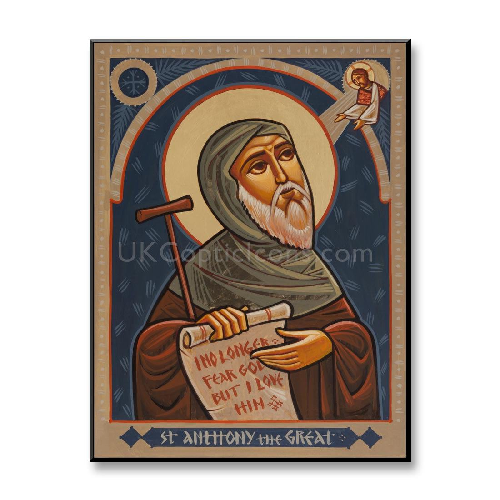
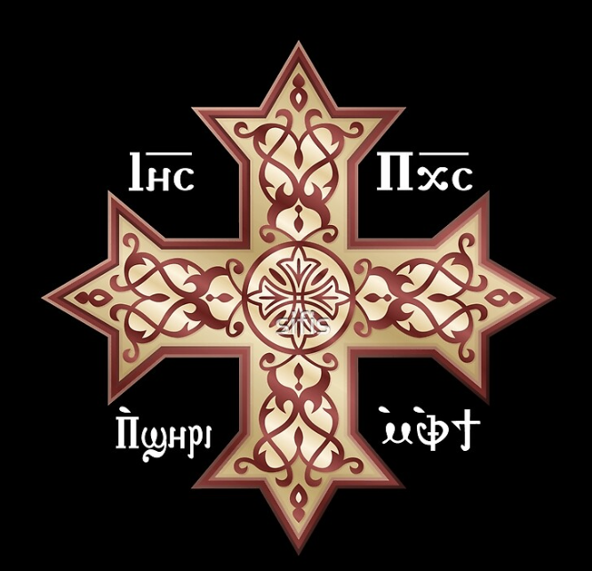
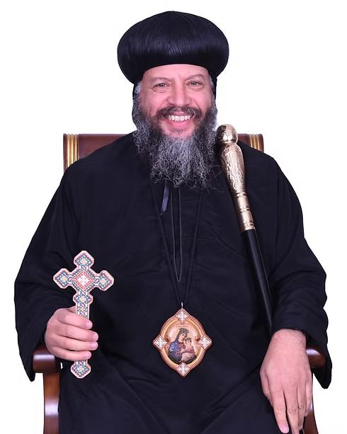
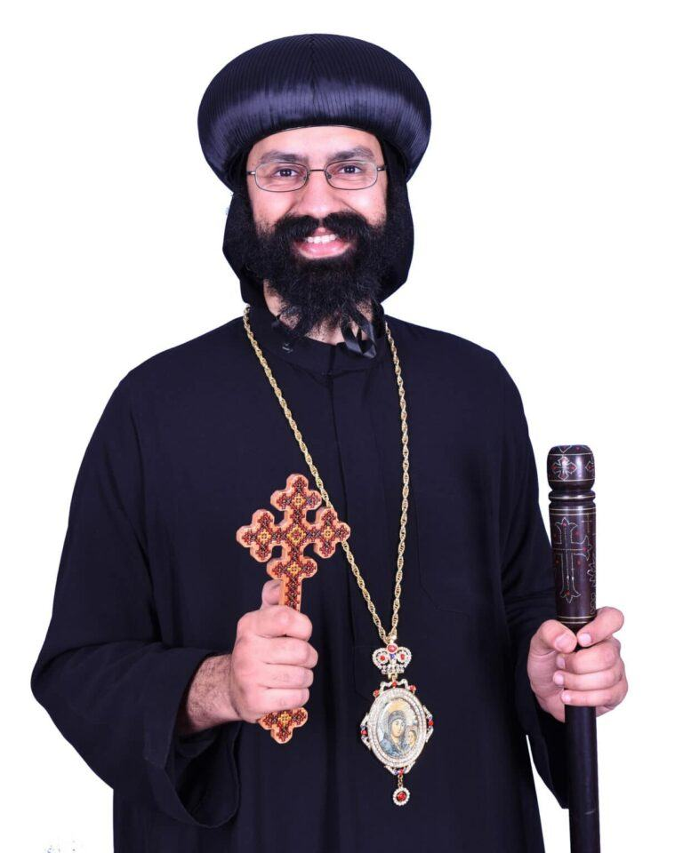
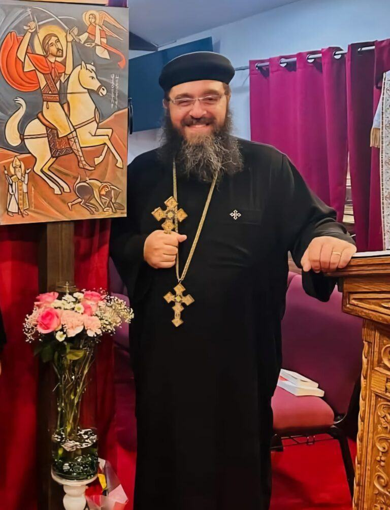

Faith · patron saint · leadership
About Us
Discover our ancient apostolic faith, the witness of our beloved patron saint, and the shepherds who serve our Church.

Desert father · living witnessOur ancient apostolic roots
Two thousand years of living faith.
Founded in the first century by Saint Mark the Apostle, the Coptic Orthodox Church of Alexandria is one of the oldest Christian institutions in the world. St. Mark arrived in Egypt around AD 42, planting an apostolic faith that has remained unbroken.
From the monastic witness of St. Anthony the Great to the theological defense of St. Athanasius, our sacred inheritance is not merely an archive—it is a living continuity of the Holy Mysteries.
“In that day there will be an altar to the Lord in the midst of the land of Egypt.”Isaiah 19:19 · NKJV
His life & witness
The story of the victorious martyr.
From the Roman army to the crown of martyrdom, his life became a testimony to courage, humility, and complete faith in Christ.
01
Early life
A soldier raised in the faith
St. Mercurius was born to pagan parents in Rome in 225 A.D. and was named Philopateer, a Greek name meaning “lover of the Father.” After his father, Gordianus, was miraculously saved from death by an angel of the Lord, both of his parents embraced Christianity. They preached, gave alms, and raised their son according to Christian teachings.
By the age of seventeen, Philopateer had joined the Roman army and gained a reputation as a gifted swordsman and tactician. He was promoted to commander and given the name Mercurius, a name then associated with good fortune and glory.
02
The heavenly sword
Why he is called Abu-Sefain
During a fierce battle, Mercurius saw a radiant man who encouraged him not to fear. The heavenly messenger placed a sword in his hand, promised him victory, and reminded him to remember the Lord after the battle. Strengthened by the Holy Spirit, Mercurius fought bravely and his army prevailed.
He became known as the saint of the two swords—Abu-Sefain. One sword represents his military service; the other represents the sword of divine power entrusted to him by the angel.
Fear not, nor be downcast, for I have been sent to help you and lead you to victory.
03
A faithful confession
“I am a Christian.”
Emperor Decius decreed that everyone must offer incense and sacrifice to pagan gods. After Mercurius refused to worship at the temple of Artemis, he was accused before the emperor. Decius reminded him of the honors and military rank he had received, but Mercurius answered that victory came from God through Christ—not from idols.
He removed his military cloak and golden belt, laid them at the emperor’s feet, and openly declared his Christian faith. Neither promises of greater authority nor threats of suffering persuaded him to abandon Christ.
I will never stop worshiping my Master Jesus Christ for temporary honors, but by His grace, I will remain faithful to Him until death.
04
Witness & endurance
Strengthened through every trial
Decius ordered Mercurius imprisoned and subjected to severe tortures. Yet angels repeatedly appeared to console him, heal his wounds, and remind him of the eternal crown prepared for those who remain faithful. The fragrance of incense was said to rise from his body during his suffering, and many who witnessed his steadfastness confessed faith in Christ.
When it became clear that he would not deny the Lord, Mercurius was taken to Caesarea in Cappadocia. Before his execution, he asked for time to pray. In a vision filled with light, Christ welcomed His faithful servant and promised that his witness and intercessions would be remembered throughout the world.
St. Philopateer Mercurius offered his head to the executioners and received the crown of martyrdom on the twenty-fifth day of the blessed month of Hatour. After his martyrdom, his body became white as snow and gave forth a sweet fragrance, and many people became Christians.
A tradition remembered by the Church
Julian the Apostate
Church tradition connects St. Mercurius with the death of Emperor Julian the Apostate, who had renounced Christianity and persecuted the faithful. While St. Basil the Great and other saints prayed, an icon of St. Mercurius was said to disappear and later return bearing the sign that Julian had fallen in battle.
The account became an important historical tradition that carried the name of St. Mercurius throughout the Church and strengthened the faithful during persecution.
“You have won, O Galilean.”Words traditionally attributed to Julian

Through his prayers
May the prayers of St. Philopateer Mercurius be with us all.
Ϩⲓⲧⲉⲛ ⲛⲓⲉⲩⲭⲏ ̀ⲛⲧⲉ ⲛⲓⲁⲑⲗⲟⲫⲟⲣⲟⲥ
̀ⲙⲙⲁⲣⲧⲩⲣⲟⲥ Ⲫⲓⲗⲟⲡⲁⲧⲏⲣ ⲙⲉⲣⲕⲟⲩⲣⲓⲟⲥ
̀ⲡϭⲟⲓⲥ ⲁⲣⲓ̀ϩⲙⲟⲧ ⲛⲁⲛ ̀ⲙⲡⲓⲭⲱ ̀ⲉⲩⲟⲗ ̀ⲛⲧⲉ ⲛⲉⲛⲛⲟⲃⲓ
And glory be to God forever. Amen.
Ecclesiastical leadership
Our Holy Synod & clergy
Serving through apostolic continuity, pastoral care, and faithful teaching.
118th Pope of Alexandria
His Holiness Pope Tawadros II

Diocese of the Southern United States
His Eminence Metropolitan Youssef

General Bishop for Florida
His Grace Bishop Basil

Parish Priest, Palm Harbor
Fr. Fam Nicoula
✣
Our mission
Preserving the sacred. Sharing the life of Christ.
We are a Christ-centered, Spirit-led community rooted in the ancient apostolic faith. We glorify God through faithful worship, sound doctrine, loving fellowship, and a life of holiness while transmitting our spiritual and liturgical heritage to the next generation.